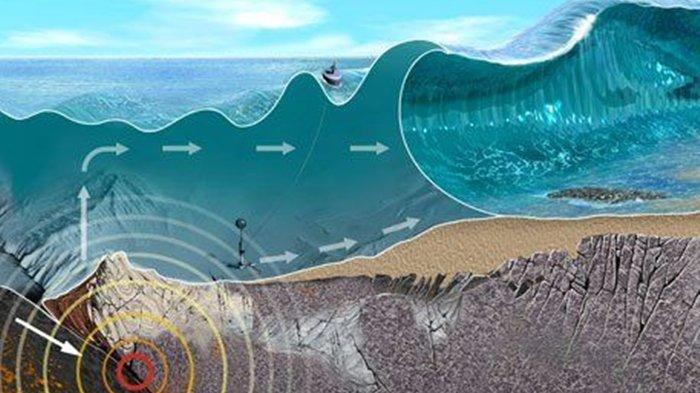
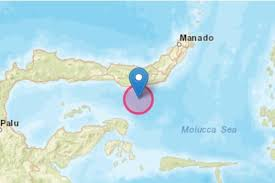

Viral-telah terjadi gampa bumi di wilayah maluku tenggara pada kamis 19 mei 2022.
Guncangan yang terjadi pada hari itu kekuatan gempa ini mencapai 5,5 magnetudo tidak berpotensi memicu tsunami,gempa itu terjadi pada pukul 22:29 WIB,BMKG mengakatan titik gempa berada pada koordinat 6,06 derajat lintang selatan dan 131,18 derajat bujur timur,pusat gempa yang berasal dari 178 km arah barat daya dari maluku tenggara,yang berada pada kedalaman 59 km,belum ada laporan terkait dampak kerusakan akibat guncangan gempa tersebut,namun dapat di perkirakan kerugian bisa mencaai puluhan juta.
"hati-hati terhadap gempa susulan yang mungkin terjadi,"katanya.
 Penyebab terjadinya gempa
Berdasarkan posisi dan kedalamannya,kejadian gempa bumi ini di sebabkan oleh aktifitas zona subduksi yang terbentuk akibat tumbukan lempeng indo australia terhadap lempeng eurasia.
himbauan untuk masyarakat